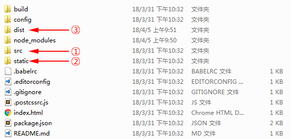

生成Vue单页面应用项目目录
单页应用(SPA)
单页Web应用（single page web application，SPA），就是将系统所有的操作交互限定在一个web页面中。单页应用程序 (SPA) 是加载单个HTML页面，系统的不同功能通过加载不同功能组件的形式来切换，不同功能组件全部封装到了js文件中，这些文件在应用开始访问时就一起加载完，所以整个系统在切换不同功能时，页面的地址是不变的，系统切换可以做到局部刷新，也可以叫做无刷新，这么做的目的是为了给用户提供更加流畅的用户体验。
生成项目目录
使用vue自动化工具可以快速搭建单页应用项目目录。该工具为现代化的前端开发工作流提供了开箱即用的构建配置。只需几分钟即可创建并启动一个带热重载、保存时静态检查以及可用于生产环境的构建配置的项目：
// 生成一个基于 webpack 模板的新项目
$ vue init webpack my-project
// 启动开发服务器 ctrl+c 停止服务
cd my-project
npm run dev
项目目录结构说明

需要关注的是上面标注的三个目录：
- 文件夹1(src)，主开发目录，要开发的单文件组件全部在这个目录下
- 文件夹2(static)，静态资源目录，所有的css，js文件放在这个文件夹
- 文件夹3(dist)，项目打包发布文件夹，最后要上线单文件项目文件都在这个文件夹中
还有node_modules目录是node的包目录，config是配置目录，build是项目打包时依赖的目录。
页面结构说明

整个项目是一个主文件index.html,index.html中会引入src文件夹中的main.js,main.js中会导入顶级单文件组件App.vue,App.vue中会通过组件嵌套或者路由来引用components文件夹中的其他单文件组件。